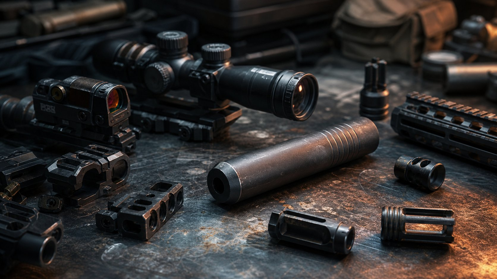

1. Les principes d'attachement en S7
- Le recul vertical d'abord : compensateur/muzzle avant tout — c'est la statistique n°1.
- Le recul horizontal ensuite : poignée angled/verti — l'angle des sprays se brise là.
- L'ergonomie toujours : rechargez plus vite, épaulement plus vite, moins de sway. Ne négligez pas.
- La portée après : canon rallongé seulement si le map demande du reach.
- Baril et crosse en dernier — sauf si un attachement saisonnier change les règles (Vulcan Barrel, FAL Burst Kit).
La règle du coût/efficacité
Un bon build coûte 1,5 à 2× le prix de base. Un excellent build coûte 2 à 3×. Au-delà de 4×, achetez une autre arme — la loi des rendements décroissants à l'œuvre.
2. Familles d'attachements et ce qu'elles font
| Famille | Effet principal | Exemples S7 |
|---|---|---|
| Muzzle / Bouche | Recul vertical ↓, flash ↓, bruit ↓ | Compensateurs verticaux, caches flash |
| Garde-main / Rail | Recul horizontal ↓, ergonomie ↑ | Rails M-LOK, handguards légers |
| Poignée | Recoil control global | Angled grip, vertical, bipod déployable |
| Crosse | Ergo / stabilité / sway | Skeleton stocks, recoil pads |
| Canon | Portée effective / vélicité | Vulcan Barrel (MPX), FAL Burst Kit |
| Chargeur | Capacité / rechargement | 45, 60 coups, rapide-con |
| Optique | Zoom / reticle | 1x holo, 4x polyvalent, 10x sniper |
| Intérieur / Gas | RPM / cadence / cycling | PCC-9 Fully-Automatic Kit, M110 Binary |
3. Attachements et caps de mode S7
- Normal (T4 cap) : les attachements remplacent souvent la rareté des muns — investissez dedans.
- Lockdown (T5 cap) : combo mun T4-T5 + attachement premium = la méta.
- Forbidden (T6 cap) : attachements obligatoires, muns épiques, maîtrise totale du recoil.
5. Le catalogue officiel des attachements
Le wiki officiel recense 104 pièces d'attachement, listées avec la ou les armes auxquelles elles se montent. C'est une donnée vérifiable, contrairement au « ça améliore le recul » que l'on entend partout. Le catalogue ci-dessous en reprend la structure.
| Arme | Pièces dédiées | Détail |
|---|---|---|
| AKS-74U | 5 | AKS 74U Series Classic Wooden Hand Guard, AKS-74U Series Universal Gas Tube, AKS-74U Standard Dust Cover, AKS 74 Metal Stock, AKS to PT Adapter |
| CZ 52 | 1 | Dedicated CZ 52 Upper Receiver |
| FAL | 4 | FAL Perforated Front Hand Guard, FAL Sight Mount Receiver Cover, FAL Special Stock, FAL Triangle Stock |
| G17 | 4 | G17 Carbon Fiber Receiver, G17 Desert Carbon Fiber Receiver, G17 Metal Machined Receiver, G17 Threaded Barrel |
| H416 | 2 | H416 A5 Universal Medium Barrel, H416 A5 Universal Standard Barrel |
| M110 | 1 | M110 Extended Barrel |
| M1911 | 4 | M1911 Standard Barrel, M1911 Threaded Barrel, M1911 Standard Upper Receiver, Dedicated M1911 Grip |
| M3A1 | 3 | M3A1 Standard Barrel, M3A1 Folding Stock, Dedicated M3A1 Rail |
| M870 | 5 | M870 Short Barrel, M870 Standard Barrel, M870 Anti-Slip Stock, M870 Classic Composite Hand Guard, Dedicated M870 Buffer Adapter |
| MAC-10 | 2 | MAC-10 Extended Barrel, MAC-10 Premium Folding Stock |
| MP-133 | 13 | MP-133 510mm Barrel, MP-133 540mm Barrel, MP-133 610mm Barrel, MP-133 660mm Barrel, MP-133 710mm Barrel, MP-133 Polymer Stock, MP-133 Wooden Stock, MP-133 Polymer Grip, MP-133 Stock Adapter, MP 133 Beech Hand Guard, MP 133 Plastic Hand Guard, Dedicated M870 Buffer Adapter, M870 to AR Grip |
| MP5 | 4 | MP5 High-Performance SD Upper Receiver, MP5 Tactical Stock, MP5SD Barrel Rail, MP5SD Polymer Hand Guard |
| MPX | 4 | MPX Standard Barrel, MPX Extended Barrel, MPX 10.5 Modular Locking Handguard, MPX 14 Modular Locking Handguard |
| Mini-14 | 1 | Mini-14 Top Rail |
| Mosin | 5 | Mosin Carbine Barrel, Mosin Carbine Sniper Wooden Stock, Mosin Standard Sniper Stock, Mosin Rifle Sight Mount, Mosin Sight Extension Rail |
| P90 | 1 | P90 Special Hand Guard |
| RPK-16 | 1 | RPK-16 Tactical Rail |
| S12K | 1 | S12K Superb Short Hand Guard |
| SKS | 2 | SKS OEM Oak Stock, SKS Rifle Sight Mount |
| T79 | 6 | T79 Basic Hand Guard, T79 Improved Hand Guard, T79 Modern Hand Guard, T79 Classic Stock, T79 Stock Adapter, T79 Top Rail |
| Type 81 | 1 | Type 81 Stock |
| UMP45 | 3 | UMP45 Standard Stock, UMP45 Std.Barrel, Dedicated UMP45 Rail |
| Uzi | 3 | Uzi Adapter, Uzi Top Rail, Uzi Wooden Stock |
Source : wiki officiel ABI, section « Weapon Mods ». Ce sont les compatibilités documentées ; l'intérêt de chaque pièce reste une question de build, et le prix de chaque pièce n'est pas publié par le wiki.
Les grandes familles d'attachements
Rails et supports de viseur
- 30mm Rail Sight Mount
- 34mm Hybrid Sight Mount
- 34mm Scope Ring
- 3.5x Scope Ring Base
- Aluminum Sight Rail
- Compact Magnifying Sight Rail
- Compact Sight Bottom Rail
- Compact Sight Top Rail
- Compact Universal Sight Base
- Cross Slot Sight Mount
- Mini Red Dot Sight Rail
- Mosin Rifle Sight Mount
- Mosin Sight Extension Rail
- SKS Rifle Sight Mount
- T79 Top Rail
- Uzi Top Rail
- Mini-14 Top Rail
- AK Compatible Rail In-Line Dust Cover
- AK Custom Rail Dust Cover
- AKM Series Standard Dust Cover
- AKS-74U Standard Dust Cover
- Dedicated M3A1 Rail
Poignées et mains courantes
- AR Compatible Rear Grip
- Industrial AR Rear Grip
- M870 to AR Grip
- MP-133 Polymer Grip
- Dedicated M1911 Grip
- MP-133 Beech Hand Guard
- MP 133 Plastic Hand Guard
- AK Quick-mod Hand Guard
- AK-series CAA Polymer Front Hand Guard
- AK-series Wooden Hand Guard
- AKS 74U Series Classic Wooden Hand Guard
- AR Special Universal Hand Guard
- AR-series Carbine Hand Guard
- FAL Perforated Front Hand Guard
- MP5SD Polymer Hand Guard
- MPX 10.5 Modular Locking Handguard
- MPX 14 Modular Locking Handguard
- M870 Classic Composite Hand Guard
- P90 Special Hand Guard
- S12K Superb Short Hand Guard
- T79 Basic Hand Guard
- T79 Improved Hand Guard
- T79 Modern Hand Guard
Cibles et mechanismes
- 2 Modular Lock Rail
- 2.5 Modular Lock Rail
- 4.1 Modular Lock Rail
- AKS to PT Adapter
- AKM Standard Gas Tube
- AKS-74U Series Universal Gas Tube
- AK Series Alloy Charging Handle Cap
- Dedicated M870 Buffer Adapter
- MP-133 Stock Adapter
- T79 Stock Adapter
- Uzi Adapter
- Dedicated CZ 52 Upper Receiver
- Dedicated M3A1 Rail
- Dedicated UMP45 Rail
Cibles
- AK Series FAB Buttstock
- AKS 74 Metal Stock
- FAL Special Stock
- FAL Triangle Stock
- M3A1 Folding Stock
- M4 Standard Stock
- M870 Anti-Slip Stock
- MAC-10 Premium Folding Stock
- Mosin Carbine Sniper Wooden Stock
- Mosin Standard Sniper Stock
- MP-133 Polymer Stock
- MP-133 Wooden Stock
- MP5 Tactical Stock
- SKS OEM Oak Stock
- T79 Classic Stock
- UMP45 Standard Stock
- Uzi Wooden Stock
- Type 81 Stock
- AR Recoil Buffer
Canons
- G17 Threaded Barrel
- H416 A5 Universal Medium Barrel
- H416 A5 Universal Standard Barrel
- MAC-10 Extended Barrel
- M110 Extended Barrel
- M1911 Standard Barrel
- M1911 Threaded Barrel
- M24 Bolt-Action Rifle
- M3A1 Standard Barrel
- M870 Short Barrel
- M870 Standard Barrel
- MP-133 510mm Barrel
- MP-133 540mm Barrel
- MP-133 610mm Barrel
- MP-133 660mm Barrel
- MP-133 710mm Barrel
- MP5SD Barrel Rail
- MPX Standard Barrel
- MPX Extended Barrel
- Mosin Carbine Barrel
- UMP45 Std.Barrel
- G17 Carbon Fiber Receiver
- G17 Desert Carbon Fiber Receiver
- G17 Metal Machined Receiver
- M1911 Standard Upper Receiver
Les canons filetés, un vrai levier
Quatre armes du catalogue officiel disposent d'un canon fileté dédié : le M1911, le G17, le MPX Extended Barrel et le M110 Extended Barrel. Le canon fileté est le point d'accroche du modérateur. C'est la seule famille d'attachements où le wiki documente une compatibilité qui change réellement la signature de l'arme — un modérateur transforme un fusil en arme de raid discret.
6. Ordre de montage d'un build propre
- Munition (le vrai filtre de puissance)
- Muzzle + poignée (contrôle)
- Garde-main léger (ergo)
- Optique adaptée à votre map
- Chargeur et intérieur (cadence)
- Crosse et canon (finitions)
Piège de novice
Monter des viseurs premium sur un gun à mun T2 : vous avez payé pour montrer, pas pour gagner. Munition > optique, toujours.
Envie de l'exhaustif ?
Le set saisonnier mérite une lecture dédiée : Attachements S7. Et pour voir quels builds en découlent : les builds recommandés.